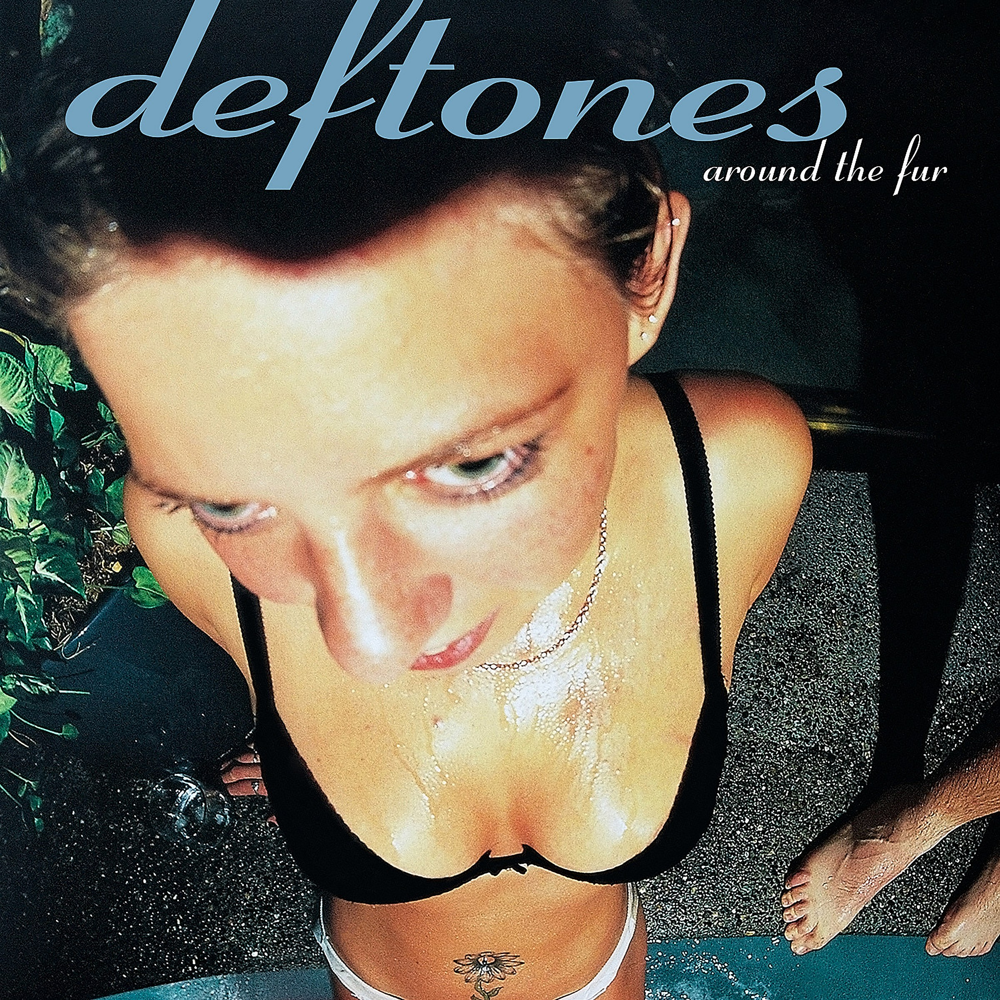

| Artiste | Deftones | ||
|---|---|---|---|
| Album | Around the fur | ||
|  | Piste | Titre | Durée |
| 1 | My Own Summer(Shove It) | 3:34 | |
| 2 | Lhabia | 4:11 | |
| 3 | Mascara | 3:44 | |
| 4 | Around the Fur | 3:31 | |
| 5 | Rickets | 2:42 | |
| 6 | Be Quiet and Drive(Far Away) | 4:59 | |
| 7 | Lotion | 3:57 | |
| 8 | Dai the Flu | 4:36 | |
| 9 | Headup | 6:12 | |
| 10 | MX | 4:48 | |
| Source | https://en.wikipedia.org/wiki/Around_the_Fur | ||